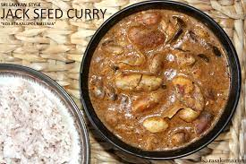

Ingredients:
- 1 TBSP Coriander Seeds
- 3/4 TBSP Cumin Seeds
- 1/2 TBSP Black Peppercorns
- 1/4 TSP Mustard Seeds
- 1 Clove
- 1 Green Cardamom
- 1/4 TSP Fennel Seeds
- Curry Leaves, 6 + More
- 1/2 TSP Fenugreek
- 25 Cempedak / Jackfruit Seeds
- Pandan Leaves, 3 + 2
- Pinch Sea Salt
- 2 TBSP Coconut Butter
- 1 TBSP Desiccated Coconut
- 2 Red Onion Finely Minced
- Pinch Demerara Sugar
- 3 Cloves Garlic Finely Minced
- 1/2 TSP Turmeric Powder
- Kashmiri Chili Powder, 1/2 TSP Adjust To Preference
- 2 TBSP Basmati Rice
- 250 g Coconut Milk
- 260 g Coconut Cream
- 2 Green Chili Coarsely Sliced, Deseeded
Instructions:
- In a skillet over medium heat, toast coriander, cumin, pepper, mustard, clove, cardamom, fennel, curry leaves, and fenugreek until aromatic. Grind into a powder and set aside.
- Boil Cempedak Seeds: Wash the cempedak or jackfruit seeds. In a saucepot, add seeds, 3 pandan leaves, and a pinch of salt. Boil for 15-20 mins until husk can be peeled easily. Peel and discard husk.
- Toast Coconut and Onions: In a skillet, melt coconut butter. Add desiccated coconut, then onion. Season with salt and sugar. Sauté until lightly caramelized.
- Add Aromatics: Stir in garlic, turmeric, chili, basmati rice, curry leaves, and the spice blend. Sauté until well combined and aromatic.
- Cook with Coconut: Pour in coconut milk and cream. Add cempedak seeds and green chilies. Stir and bring to a simmer. Cover and cook for 15-20 mins until oil separates from milk solids.
- Final Touch: Submerge 2 pandan leaves, bring to a simmer, and cook until the liquid evaporates. Stir occasionally to prevent burning. Adjust seasoning with salt, remove pandan leaves, and serve immediately.